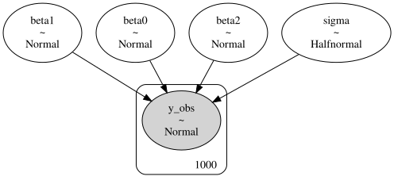
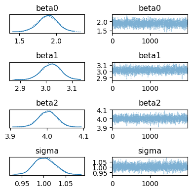
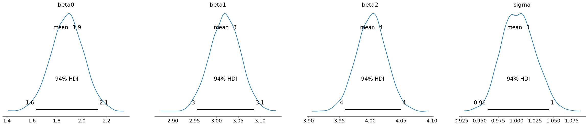
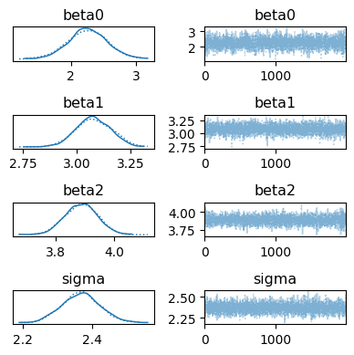
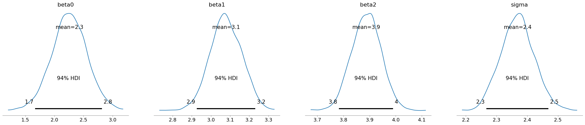

ベイズ線形回帰#
import matplotlib.pyplot as plt
import numpy as np
import scipy as sp
# データを作成
n = 1000
from scipy.stats import multivariate_normal
mean = np.array([3, 5])
Sigma = np.array([
[1, 0.5],
[0.5, 2],
])
X = multivariate_normal.rvs(mean=mean, cov=Sigma, size=n, random_state=0)
import statsmodels.api as sm
X = sm.add_constant(X)
# 真のパラメータ
beta = np.array([2, 3, 4])
データが均一分散の場合#
# 均一分散の場合
e = np.random.normal(loc=0, scale=1, size=n)
y = X @ beta + e
# 頻度主義
import statsmodels.api as sm
ols = sm.OLS(y, X).fit(cov_type="HC1")
ols.summary()
| Dep. Variable: | y | R-squared: | 0.980 |
|---|---|---|---|
| Model: | OLS | Adj. R-squared: | 0.980 |
| Method: | Least Squares | F-statistic: | 2.188e+04 |
| Date: | Sun, 03 May 2026 | Prob (F-statistic): | 0.00 |
| Time: | 09:11:10 | Log-Likelihood: | -1419.0 |
| No. Observations: | 1000 | AIC: | 2844. |
| Df Residuals: | 997 | BIC: | 2859. |
| Df Model: | 2 | ||
| Covariance Type: | HC1 |
| coef | std err | z | P>|z| | [0.025 | 0.975] | |
|---|---|---|---|---|---|---|
| const | 1.9039 | 0.142 | 13.374 | 0.000 | 1.625 | 2.183 |
| x1 | 3.0181 | 0.034 | 88.465 | 0.000 | 2.951 | 3.085 |
| x2 | 3.9992 | 0.024 | 164.689 | 0.000 | 3.952 | 4.047 |
| Omnibus: | 0.249 | Durbin-Watson: | 1.966 |
|---|---|---|---|
| Prob(Omnibus): | 0.883 | Jarque-Bera (JB): | 0.178 |
| Skew: | 0.026 | Prob(JB): | 0.915 |
| Kurtosis: | 3.040 | Cond. No. | 25.9 |
Notes:
[1] Standard Errors are heteroscedasticity robust (HC1)
import pymc as pm
import arviz as az
model = pm.Model()
with model:
beta0 = pm.Normal("beta0", mu=0, sigma=1)
beta1 = pm.Normal("beta1", mu=0, sigma=1)
beta2 = pm.Normal("beta2", mu=0, sigma=1)
sigma = pm.HalfNormal("sigma", sigma=1) # 分散なので非負の分布を使う
# 平均値 mu
mu = beta0 + beta1 * X[:, 1] + beta2 * X[:, 2]
# 観測値をもつ確率変数は_obsとする
y_obs = pm.Normal("y_obs", mu=mu, sigma=sigma, observed=y)
# モデルをGraphvizで表示
pm.model_to_graphviz(model)

# ベイズ線形回帰モデルをサンプリング
with model:
idata = pm.sample(
chains=2,
tune=1000, # バーンイン期間の、捨てるサンプル数
draws=2000, # 採用するサンプル数
random_seed=0,
)
# 各chainsの結果を表示
az.plot_trace(idata, figsize=[4, 4])
plt.tight_layout()
plt.show()
Initializing NUTS using jitter+adapt_diag...
Multiprocess sampling (2 chains in 2 jobs)
NUTS: [beta0, beta1, beta2, sigma]
Sampling 2 chains for 1_000 tune and 2_000 draw iterations (2_000 + 4_000 draws total) took 5 seconds.
We recommend running at least 4 chains for robust computation of convergence diagnostics

az.plot_posterior(idata)
plt.show()

データが不均一分散の場合#
# 不均一分散の場合
def normalize(x):
return (x - x.min()) / (x.max() - x.min())
sigma = 1 + normalize(X[:, 1] + X[:, 2]) * 3
e = np.random.normal(loc=0, scale=sigma, size=n)
y = X @ beta + e
頻度主義 & 不均一分散に頑健な誤差推定#
# 頻度主義
import statsmodels.api as sm
ols = sm.OLS(y, X).fit(cov_type="HC1")
ols.summary()
| Dep. Variable: | y | R-squared: | 0.896 |
|---|---|---|---|
| Model: | OLS | Adj. R-squared: | 0.896 |
| Method: | Least Squares | F-statistic: | 4285. |
| Date: | Sun, 03 May 2026 | Prob (F-statistic): | 0.00 |
| Time: | 09:11:26 | Log-Likelihood: | -2281.3 |
| No. Observations: | 1000 | AIC: | 4569. |
| Df Residuals: | 997 | BIC: | 4583. |
| Df Model: | 2 | ||
| Covariance Type: | HC1 |
| coef | std err | z | P>|z| | [0.025 | 0.975] | |
|---|---|---|---|---|---|---|
| const | 2.3841 | 0.295 | 8.088 | 0.000 | 1.806 | 2.962 |
| x1 | 3.0677 | 0.078 | 39.200 | 0.000 | 2.914 | 3.221 |
| x2 | 3.8706 | 0.058 | 66.173 | 0.000 | 3.756 | 3.985 |
| Omnibus: | 6.753 | Durbin-Watson: | 2.000 |
|---|---|---|---|
| Prob(Omnibus): | 0.034 | Jarque-Bera (JB): | 8.933 |
| Skew: | -0.023 | Prob(JB): | 0.0115 |
| Kurtosis: | 3.461 | Cond. No. | 25.9 |
Notes:
[1] Standard Errors are heteroscedasticity robust (HC1)
↑ 切片の推定にバイアスが入っている
均一分散を想定したベイズ線形回帰#
import pymc as pm
import arviz as az
model = pm.Model()
with model:
beta0 = pm.Normal("beta0", mu=0, sigma=1)
beta1 = pm.Normal("beta1", mu=0, sigma=1)
beta2 = pm.Normal("beta2", mu=0, sigma=1)
sigma = pm.HalfNormal("sigma", sigma=1) # 分散なので非負の分布を使う
# 平均値 mu
mu = beta0 + beta1 * X[:, 1] + beta2 * X[:, 2]
# 観測値をもつ確率変数は_obsとする
y_obs = pm.Normal("y_obs", mu=mu, sigma=sigma, observed=y)
# モデルをGraphvizで表示
pm.model_to_graphviz(model)
# ベイズ線形回帰モデルをサンプリング
with model:
idata = pm.sample(
chains=2,
tune=1000, # バーンイン期間の、捨てるサンプル数
draws=2000, # 採用するサンプル数
random_seed=0,
)
# 各chainsの結果を表示
az.plot_trace(idata, figsize=[4, 4])
plt.tight_layout()
plt.show()
Initializing NUTS using jitter+adapt_diag...
Multiprocess sampling (2 chains in 2 jobs)
NUTS: [beta0, beta1, beta2, sigma]
Sampling 2 chains for 1_000 tune and 2_000 draw iterations (2_000 + 4_000 draws total) took 4 seconds.
We recommend running at least 4 chains for robust computation of convergence diagnostics

az.plot_posterior(idata)
plt.show()

不均一分散を想定したベイズ線形回帰（WIP）#
分散をxの関数にしたかった。以下コードで推定できるが個々の\(\sigma_i\)が別々に推定される形になって結果が見づらい。もっといい表し方はないものか。
import pymc as pm
import arviz as az
model = pm.Model()
with model:
beta0 = pm.Normal("beta0", mu=0, sigma=1)
beta1 = pm.Normal("beta1", mu=0, sigma=1)
beta2 = pm.Normal("beta2", mu=0, sigma=1)
# 誤差分散にも線形モデルを入れる
w0 = pm.Normal("w0", mu=0, sigma=1)
w1 = pm.Normal("w1", mu=0, sigma=1)
w2 = pm.Normal("w2", mu=0, sigma=1)
lam = pm.math.exp(w0 + w1 * X[:, 1] + w2 * X[:, 2])
sigma = pm.Exponential("sigma", lam=lam) # 分散なので非負の分布を使う
# 平均値 mu
mu = beta0 + beta1 * X[:, 1] + beta2 * X[:, 2]
# 観測値をもつ確率変数は_obsとする
y_obs = pm.Normal("y_obs", mu=mu, sigma=sigma, observed=y)
# モデルをGraphvizで表示
pm.model_to_graphviz(model)
# ベイズ線形回帰モデルをサンプリング
with model:
idata = pm.sample(
chains=2,
tune=1000, # バーンイン期間の、捨てるサンプル数
draws=2000, # 採用するサンプル数
random_seed=0,
)
# 各chainsの結果を表示
az.plot_trace(idata, figsize=[4, 4])
plt.tight_layout()
plt.show()
az.plot_posterior(idata)
plt.show()